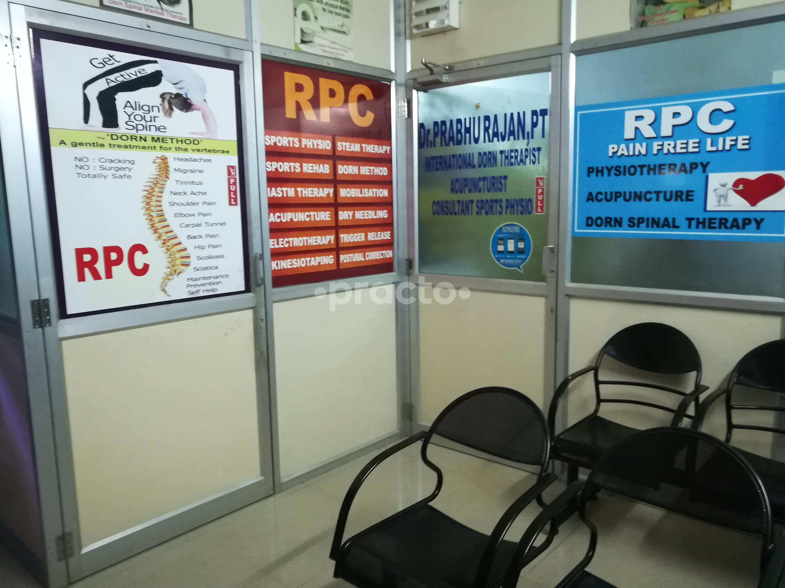

Decompress tight fascia and dissolve stubborn scar tissue.
While most therapies compress tissues inward, Kinesio Cupping uses therapeutic negative suction pressure to lift skin and superficial fascia away from the muscle, creating room for micro-circulation and lymphatic drainage. Combined with IASTM (Instrument-Assisted Soft Tissue Mobilization) stainless steel contour blades, it breaks down restrictive adhesions.

Chromepet Practice: Manual therapy and postural correction station at our Chromepet practice.
Why Fascial Restriction Causes Persistent, Mysterious Aches
Fascia is an interconnected 3D spiderweb of connective tissue enveloping every muscle, nerve, and bone. After an injury or years of poor posture, fascia dehydrates and forms microscopic cross-links and adhesions that restrict joint glide and squeeze pain receptors. By combining negative suction cupping with bevel-edged IASTM instruments, Dr. Prabhu Rajan rehydrates the fascial plane and restores effortless movement.
Fascial Restriction Scanning
Using ergonomic stainless steel instruments to detect gravelly tissue textures and fascial densification.
IASTM Cross-Fiber Friction
Controlled, gentle micro-strokes stimulate fibroblast proliferation and realign disorganized collagen.
Dynamic Kinesio Cupping
Placing suction cups over restricted meridian lines and guiding active joint movements to decompress the layers.
Myofascial Flush & Mobility
Flushing out liberated metabolic waste and integrating full functional range of motion.
Conditions effectively resolved at our clinic.
Every patient receives an individual biomechanical evaluation. We treat the foundational cause of your impairment rather than merely silencing symptoms.
Ilio-Tibial (IT) Band Friction Syndrome
Decompresses the dense lateral fascia of the thigh, eliminating sharp stabbing knee pain in runners.
Post-Surgical Scar Tissue Mobilization
Softens and loosens thick, puckered scars after abdominal, orthopedic, or spine surgeries.
Chronic Mid-Back & Scapular Tightness
Releases deep fascial tension between the shoulder blades caused by computer hunching.
Plantar Fascial Densification
IASTM contour blades break down rigid adhesions along the arch of the foot, restoring flexibility.
Thoracic Spine & Rib Stiffness
Dynamic cupping expands ribcage excursion, improving deep breathing and spinal rotation.
Post-Workout Athletic Fatigue
Accelerates removal of lactic acid and metabolic byproducts, cutting athletic recovery times in half.
Supervised directly by Dr. Prabhu Rajan, PT
With 17 years of specialized practice, Dr. Prabhu Rajan personally conducts every initial biomechanical evaluation, formulates your therapy plan, and monitors your progress every session.
"Dr. Prabhu's treatment for my back and spine gave me life-changing relief after months of suffering. Very gentle and thorough."
— Verified Patient Review (Practo • 99% Recommended)
Frequently Asked Questions
Take the first step toward lasting, root-cause pain relief.
Don't wait for pain to disrupt your work, sleep, or daily mobility. Consult Dr. Prabhu Rajan, PT at our Chromepet clinic or schedule an in-home evaluation today.